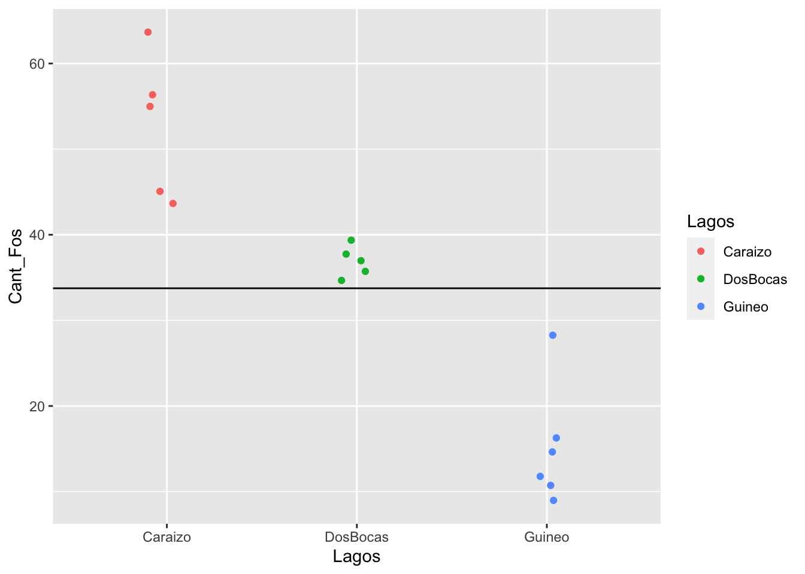

Chapter 17 Activar libreria
library(tidyverse)
library(ggplot2)
library(huxtable)
library(car)
library(pastecs)
library(multcomp)
library(compute.es)
library(WRS2) 17.1 ANOVA
Análisis de varianza es un método para comparar 3 o más promedios, al contrario de la prueba de t que es para comparar 2 promedios solamente. Entonces ANOVA es una extensión de la prueba t. La hipótesis nula es Ho: los promedios de los grupos son iguales. ANOVA fue desarrollado por Ronald Fisher y es basado en evaluar la varianza total del experimento y comparar esta con la varianza en los grupos. Típicamente si la varianza explicado entre los grupos es más grande que la varianza dentro los grupos se rechaza la hipótesis nula. A continuación veremos como hacer estos cálculos.
Primero hay que explicar porque es necesario ANOVA y no hacer múltiples prueba de t. Recuerda que típicamente rechazamos la hipótesis nula cuando el valor de p es menor de 0.05, el tipo de error I. A cada vez que se hace una prueba t hay 5% de error. Por consecuencia si uno hace múltiples pruebas t, hay una posibilidad que se recheza la hipótesis nula cuando se debería aceptar. Cuan grande es ese error si uno hace múltiples pruebas t.
library(tibble)
Tipo_errorI=tribble(
~Cantidad_Grupo_k, ~C, ~"0.05", ~"0.01",
"2","1","0.05", "0.01",
"3", "3", "0.14", "0.03",
"4", "6", "0.26", "0.06",
"5", "10", "0.40", "0.10",
"6", "15", "0.54", "0.14"
)
huxtable(Tipo_errorI)%>%
theme_article(header_col = FALSE)%>%
set_bottom_border(row = 1, col = everywhere, value = 1) %>%
set_caption("La probabilidad de cometer un error tipo I usando la prueba de t para cada pares de prueba (C)")%>%
add_footnote("* C=k(k-1)/2, que es la cantidad de comparación")| Cantidad_Grupo_k | C | 0.05 | 0.01 |
|---|---|---|---|
| 2 | 1 | 0.05 | 0.01 |
| 3 | 3 | 0.14 | 0.03 |
| 4 | 6 | 0.26 | 0.06 |
| 5 | 10 | 0.40 | 0.10 |
| 6 | 15 | 0.54 | 0.14 |
| * C=k(k-1)/2, que es la cantidad de comparación | |||
Nota que si tienes 4 grupos tendrá que hacer 6 pruebas de t, y eso eleva la probabilidad de cometer un tipo de error I a 26%, mucho más alto que el 5% que uno quisiera. Cuando uno hace la prueba de ANOVA y selecciona el nivel de error de 5%, es que el conjunto de todas las pruebas tiene ese nivel error posible.
17.2 Hipótesis en ANOVA
La hipótesis nula en ANOVA, es que todos los grupos tienen el mismo promedio, o mejor dicho que no hay evidencia que los promedios sean distintos. Filosoficamente uno NUNCA uede decir que algo es similar es que uno puede decir que no hay evidencia que sean diferentes. Esto proviene de el punto imprtante que uno hace un muestreo de la población, por consecuencia siempre hay la posibilidad que los datos (el muestreo) NO representa la población y hay un tipo de error II (que no se rechaza la hipótesis nula cuando se debería rechazar).
H0: \(H_o:\ \mu_1=\mu_2=\mu_3=...=\mu_k\) Ha: Por lo menos uno de los grupos no es igual a los demás.
- NOTA importante la hipótesis alterna NO es que los grupos sean distintos, es que por los menos uno de ellos es distinto.
Ejemplo: Vamos asumir que tenemos 3 grupos, k=3 y que la hipótesis nula es la siguiente
- Ho: G1=G2=G3, p >= 0.05
- Ha: Por lo menos uno de estos grupos no es igual a los demas.
Si encontramos un valor de p <0.05, rechazamos la hipótesis nula y de una de las posibles combinaciones pudiese ser G1=G2, G1=G3, pero G2 no es igual a G3.
- ¿Qué son las otras posibles combinaciones que resultaría en que se rechaza la hipótesis nula?
17.3 Crear un conjunto de datos
Aquí observamos la cantidad de fósforo por parte de millón observado en la misma especie de planta cerca tres lagos de Puerto Rico . Los datos son ficticios es para demostrar el proceso de hacer los análisis. Se observa datos de plantas 3 lagos en Pueto Rico (Caraizo, DosBocas y Guineo).
Nuestra hipótesis nula es que la cantidad de fósforo (partes por million) en la plantas es igual en los tres lagos.
- \(H_o:\ \mu_C=\mu_{DB}=\mu_G\)
- Por lo menos en uno de estos lagos las plantas tienen una concentración de fósforo diferente
id<-(1:16)
Cant_Fos<-c(55,56,64,45,44,
37,36,35,38,39,
12,28,15,16,11,9)
Lagos<-c(rep(1,5),rep(2,5), rep(3,6))
Lagos<-factor(Lagos, levels = c(1:3),
labels = c("Caraizo", "DosBocas", "Guineo"))
fosforo<-data.frame(id,Cant_Fos,Lagos)
fosforo| id | Cant_Fos | Lagos |
|---|---|---|
| 1 | 55 | Caraizo |
| 2 | 56 | Caraizo |
| 3 | 64 | Caraizo |
| 4 | 45 | Caraizo |
| 5 | 44 | Caraizo |
| 6 | 37 | DosBocas |
| 7 | 36 | DosBocas |
| 8 | 35 | DosBocas |
| 9 | 38 | DosBocas |
| 10 | 39 | DosBocas |
| 11 | 12 | Guineo |
| 12 | 28 | Guineo |
| 13 | 15 | Guineo |
| 14 | 16 | Guineo |
| 15 | 11 | Guineo |
| 16 | 9 | Guineo |
17.4 Visualizar los datos
Hacemos un gráfico de los datos. Calculamos el promedio de todos los valores de “Y” (concentración de fósforo en las plantas) y se gráfica, vemos que muchos de los valores de las plantas son por debajo los valores de la linea y muchos de los valores están por encima. Se observa que la concentración de fósforo en plantas que provienen de los lagos Caraizo y Guineo son lejos del promedio.
## [1] 33.75ggplot(fosforo, aes(Lagos, Cant_Fos, colour=Lagos))+
geom_jitter(width = 0.1)+
geom_hline(yintercept = mean_fosforo) # geom_hline = linea horizontal
Otra alternativa y una que ayuda a entender como se hace el cálculos es observar la diferencias entre el valor de la “y” y el promedio, o sea los residuales. Nota que esto se parece a la grafica de residuales de la regresión lineal. Vimos también este tipo de gráfico para la prueba de t.
plot(1:16, Cant_Fos, ylim=c(0, 60), ylab="y", xlab = "order", pch=21, bg="red")
abline(h=mean(Cant_Fos), col="blue")
for(i in 1:16) lines(c(i,i), c(mean(Cant_Fos), Cant_Fos[i]), col="green")
Ahora vamos a separar el gráfico y ver los residuales por grupo, en otra palabra, cual son los residuales entre los valores y el promedio dentro de los mismos grupos. Se observa en este caso que hay mucho menos varianza entre los valores de un mismo grupo. Este es un indice que los lagos explica la varianza (en parte) en concentración de fósforo en las plantas.
plot(1:16, Cant_Fos, ylim=c(0, 70), ylab="y", xlab = "order", pch=21, bg="black")
abline(h=mean(Cant_Fos[Lagos=="Caraizo"]), col="blue")
abline(h=mean(Cant_Fos[Lagos=="DosBocas"]), col="red")
abline(h=mean(Cant_Fos[Lagos=="Guineo"]), col="orange")
index<- 1:length(Cant_Fos)
for (i in 1:length(index)){
if(Lagos[i]=="Caraizo")
lines(c(index[i], index[i]), c(mean(Cant_Fos[Lagos=="Caraizo"]), Cant_Fos[i]), col="blue")
else if (Lagos[i]=="Guineo")
lines(c(index[i], index[i]), c(mean(Cant_Fos[Lagos=="Guineo"]), Cant_Fos[i]), col="orange")
else
lines(c(index[i], index[i]), c(mean(Cant_Fos[Lagos=="DosBocas"]), Cant_Fos[i]), col="red")
} 
Datos donde los grupos son iguales
En este ejemplo de vemos dos de los grupos donde los residuales solapan, este es probable que resulta que estos dos grupos (azul y rojo) no sean diferentes.
id<-(1:16)
Cant_Fos<-c(52,66,60,54,64,
56,58,65,49,58,
21,24,22,21,21,21)
Lagos<-c(rep(1,5),rep(2,5), rep(3,6))
Lagos<-factor(Lagos, levels = c(1:3),
labels = c("Caraizo", "DosBocas", "Guineo"))
fosforo2<-data.frame(id,Cant_Fos,Lagos)
attach(fosforo2)plot(1:16, Cant_Fos, ylim=c(0, 70), ylab="y", xlab = "order", pch=21, bg="black")
abline(h=mean(Cant_Fos[Lagos=="Caraizo"]), col="blue")
abline(h=mean(Cant_Fos[Lagos=="DosBocas"]), col="red")
abline(h=mean(Cant_Fos[Lagos=="Guineo"]), col="orange")
index<- 1:length(Cant_Fos)
for (i in 1:length(index)){
if(Lagos[i]=="Caraizo")
lines(c(index[i], index[i]), c(mean(Cant_Fos[Lagos=="Caraizo"]), Cant_Fos[i]), col="blue")
else if (Lagos[i]=="Guineo")
lines(c(index[i], index[i]), c(mean(Cant_Fos[Lagos=="Guineo"]), Cant_Fos[i]), col="orange")
else
lines(c(index[i], index[i]), c(mean(Cant_Fos[Lagos=="DosBocas"]), Cant_Fos[i]), col="red")
} 17.5 Gráficar los datos
Gráfica de los datos para observar si hay un patrón observable. Repito este punto múltiples veces ya que en mi carrera he visto mucha gente haciendo análisis de datos y hacen un análisis estadístico y rechazan la hipótesis nula. Si habría tomado el tiempo de visualizar los datos se habrían dado cuenta que no era posible este resultado porque los datos de los grupos solapan completamente.
NOTA Aquí los tres pasos para producir un gráfico con el promedio de cada grupo. 1. los datos con geom_point 2. los promedios con stat_summary(fun.y = mean, geom = “point”), para calcular el promedio del grupo 3. Una linea que une los promedios con stat_summary(fun.y = mean, geom = “line”), note la diferencia entre los dos uno usa “point” el otro usa “line”.
library(ggplot2)
ggplot(fosforo, aes(x=Lagos, y=Cant_Fos, colour=Lagos))+
geom_point()+
stat_summary(fun = mean, geom = "point", size = 2,
aes(group=1), colour = "black")+
stat_summary(fun = mean, geom = "line", size = 1,
aes(group=1), colour = "red")
17.6 Un gráfico con el intervalo de confianza.
Crear un data frame de los resultados con el package “Rmisc” y la función “summarySE”. Los pasos son identificar la variable continua (en este caso measurevar=“Cant_Fos”) y la variable discreta que identifica los grupos groupvars=“Lagos”. Esto crea un nuevo data frame con los datos resumidos que incluye, el nombre de los grupos (Lagos), el tamaño de muestra (N), el promedio de la variable (Cant_Fos), la desviación estandar (sd), el error estandar (se) y intervalo de confianza (ci).
| Lagos | N | Cant_Fos | sd | se | ci |
|---|---|---|---|---|---|
| Caraizo | 5 | 52.8 | 8.35 | 3.73 | 10.4 |
| DosBocas | 5 | 37 | 1.58 | 0.707 | 1.96 |
| Guineo | 6 | 15.2 | 6.79 | 2.77 | 7.13 |
17.7 Graficar con nuestro nuevo data frame “sum”.
Para calcular el 95% del intervalo de confianza del promedio se usa la siguiente formula \(\overline{x}\ \pm2\cdot se\). Las barras representa el 95% de donde pudiese estar el promedio si repetimos el mismo experimento 100 veces.
ggplot(sum, aes(x=Lagos,
y=Cant_Fos)) +
geom_point(colour="blue")+
geom_errorbar(aes(ymin=Cant_Fos-2*se,
ymax=Cant_Fos+2*se),
width=.2, size=0.7)
17.8 Estadística descriptiva de los Lagos
## fosforo$Lagos: Caraizo
## nbr.val nbr.null nbr.na min max range
## 5.0000000 0.0000000 0.0000000 44.0000000 64.0000000 20.0000000
## sum median mean SE.mean CI.mean.0.95 var
## 264.0000000 55.0000000 52.8000000 3.7336309 10.3662213 69.7000000
## std.dev coef.var
## 8.3486526 0.1581184
## ------------------------------------------------------------
## fosforo$Lagos: DosBocas
## nbr.val nbr.null nbr.na min max range
## 5.00000000 0.00000000 0.00000000 35.00000000 39.00000000 4.00000000
## sum median mean SE.mean CI.mean.0.95 var
## 185.00000000 37.00000000 37.00000000 0.70710678 1.96324316 2.50000000
## std.dev coef.var
## 1.58113883 0.04273348
## ------------------------------------------------------------
## fosforo$Lagos: Guineo
## nbr.val nbr.null nbr.na min max range
## 6.000000 0.000000 0.000000 9.000000 28.000000 19.000000
## sum median mean SE.mean CI.mean.0.95 var
## 91.000000 13.500000 15.166667 2.773886 7.130501 46.166667
## std.dev coef.var
## 6.794606 0.44799617.9 Los supuestos de ANOVA
Hay 4 supuestos que tenemos que evaluar cuando se hace un ANOVA.
- Los datos de cada grupo es una muestra al azar de la poblaciones
- La característica medida es son continuas.
- Igualdad de varianza: el error en la varianza en cada grupo es igual
- La variables continuas tienen una distribución normal.
17.10 Datos al azar
Este paso es uno de diseño experimental. Que los datos sean representativos de la poblaciones de interés, y que no sean sesgados a un subgrupo. Por ejemplo uno esta probando una vacuno para COVID-19 y la prueba evalúa solamente con gente en muy buena condición física (por ejemplos atletas). La selección de los participantes tiene que reflejar la población a quien se estaría ofreciendo la vacuna.
17.11 1. Datos Continuos
Los datos tienen que valores continuos, no pueden ser discretos. Por ejemplo, no pueden ser binarios (vivo/muerto), tampoco no pueden ser conteos (0,1,2,3), si hay poca variación. *** ## 2. Igualdad de varianza
La cantidad de dispersión en cada grupo tiene que ser bien similar uno al otro. Esto lo podemos comprobar con una prueba. La hipótesis nula es que cada grupo tiene una varianza igual. La hipotesis alterna es que por lo menos uno de los grupos no tiene la misma varianza.
- \[Ho: {s}^{2}_1={s}^{2}_2={s}^{2}_3…{s}^{2}_k\]
- Ha: Por lo menos uno d elos grupos no tiene la misma varianza que los otros. (similar a la Ha de ANOVA)
17.12 3. La prueba de Levene’s test
La prueba de Levene es probablemente la prueba de igualdad de varianza la más común aunque hay otras alternativas también. Puede encontrar información sobre la prueba de Levene y otras de la pruebas aquí https://en.wikipedia.org/wiki/Levene%27s_test. Para evaluar sin hay diferencias en la varianza entre los grupos de usa la función leveneTest(). Si el valor de p es mayor de 0.05 se acepta la hipótesis nula. Si no cumple con el supuesto de igualdad de varianza ver el modulo de Kruskal-Wallis para una alternariva como evaluar los datos
Con los datos de la concentración de fósforo en las plantas de tres lagos, la prueba de Levene da un resultado de p > 0.21, lo que indica que no hay evidencia que la varianza es distinta entre los grupos, por consecuencia se acepta la hipótesis nula.
| Df | F value | Pr(>F) |
|---|---|---|
| 2 | 1.76 | 0.211 |
| 13 |
17.13 4. Normalidad
Tenemos que evaluar si los datos tienen una distribución normal. Como se ha discutido en un modulo anterior hay múltiples alternativas. Vamos a limitarnos a usar la prueba de qqplot. Vemos que los datos más o menos siguen la linea, entonces podemos usar ANOVA. En este caso tenemos pocos datos pero si tuviesemos más seria apropiado evaluar cada una aparte. Lo más sencillo seria de cambiar la primera linea del siguiente script ggplot(fosforo, aes(sample = Cant_Fos, group=Lagos)). En este caso tendríamos 3 lineas. Si no cumple con el supuesto de normalidad ver el modulo de Kruskal-Wallis para una alternariva como evaluar los datos
ggplot(fosforo, aes(sample = Cant_Fos)) +
stat_qq() +
stat_qq_line(colour="blue")+
xlab("Valores teóricos")+
ylab("Valores observados")17.14 La prueba de ANOVA
Finalmente llegamos a la prueba de ANOVA, se usa la función aov(). En la primera linea vemos el resultado de comparar los tres lagos, ven que hay 2 grados de libertad (df=2), esto quiere decir que esta incluido en el analisis 3 grapos, porque el grado de libertad de calcula tomando la suma de la cantidad de grupos k-1, y este ejercicio tenemos 3-1=2. En la misma linea obsertva el valor de p, vemos que se rechaza la hipótesis nula (p <0.05). Ya sabemos que por lo menos uno de los grupos no es igual a los demás. Pero todavía no sabemos que pares son diferentes o si todos. En la segunda linea se observa lo otros datos del experimento, lo que aquí se llama los residuales.
## Df Sum Sq Mean Sq F value Pr(>F)
## Lagos 2 3939 1970 49.28 8.55e-07 ***
## Residuals 13 520 40
## ---
## Signif. codes: 0 '***' 0.001 '**' 0.01 '*' 0.05 '.' 0.1 ' ' 1Una alternativa para evaluar si los datos tienen una igualdad de varianza y normalidad es usar la función plot(), esta función presenta 4 gráficos donde vamos aquí explicar solamente las dos primeras. En el primer gráfico se observa una distribución de los residuales por grupo. Si los datos están más o menos distribuido de forma similar entre los grupos (que los datos de cada grupo tiene más o menos la misma cantidad de datos negativos y positivos alrededor del residual cero y que esta distribución se ve similar) se suguiere que hay igualdad de varianza entre los grupos.
En el segundo gráfico se observa en qqplot. Si los datos están cerca de la linea entrecortada se asume que tiene una distribución normal. Nota que hay tres datos que tienen números (5, 3, 12), estos son datos que posiblemente sean atípicos, y hay que evaluar si estos datos impacta el resultados (veremos esto más tarde, con la prueba de Cooks).


17.15 PRUEBA de Post-Hoc
Importante este paso se hace solamente si se rechaza la hipótesis nula de la prueba de ANOVA. Si aceptamos la hipótesis nula ya se acabo, no hay más nada que hacer y este paso aquí no se evalúa. Este tipo de prueba Post-Hoc se refiere a una prueba que se hace después de otra. Ya se hizo la de ANOVA y se rechazo y ahora queremos evaluar cual de los grupos es distinto uno al otro.
Hay en la literatura más de 10 pruebas que se puede utilizar después de un ANOVA, para tener un poco más de información pueden ir al siguiente website https://www.statisticshowto.com/post-hoc/. Aquí vamos a presentar solamente dos de estás. Estas dos son frecuentemente utilizadas en ciencias medicas por ser las primeras haber sido desarrolladas. Nota que el nivel de tipo de error I, es por el conjunto total de las pruebas hecha. Si selecciona un alfa de 0.05, entonces la probabilidad de cometer el error tipo I es de 5% para el total de pruebas.
- Bonferroni test
- Tukey test
17.16 Prueba de Bonferroni
Vemos ahora el se hizo 3 pruebas, y cada una tiene un valor de p menor de 5%, por consecuencia cada grupo es distinto uno del otro.
pairwise.t.test(fosforo$Cant_Fos, fosforo$Lagos, p.adjust.method = "bonferroni") # Nota aqui se usa los datos originales, el error de todos las pruebas se limita a 5%. ##
## Pairwise comparisons using t tests with pooled SD
##
## data: fosforo$Cant_Fos and fosforo$Lagos
##
## Caraizo DosBocas
## DosBocas 0.00497 -
## Guineo 6.6e-07 0.00022
##
## P value adjustment method: bonferroni17.17 Prueba de Tukey
En la prueba de Tukey vemos el resultado de las pruebas Post-Hoc. El resultado es lo mismo que la prueba anterior donde cada grupo es significativamente diferente uno del otro. En mucha ocasiones el resulto puede diferir. Si esto ocurre hay que evaluar bien cual es el nivel de confiabilidad que queremos. Algunos pruebas Post_Hoc tienden a rechazar con meas frecuencia que otra.
##
## Simultaneous Tests for General Linear Hypotheses
##
## Multiple Comparisons of Means: Tukey Contrasts
##
##
## Fit: aov(formula = Cant_Fos ~ Lagos, data = fosforo)
##
## Linear Hypotheses:
## Estimate Std. Error t value Pr(>|t|)
## DosBocas - Caraizo == 0 -15.800 3.999 -3.951 0.00437 **
## Guineo - Caraizo == 0 -37.633 3.828 -9.830 < 0.001 ***
## Guineo - DosBocas == 0 -21.833 3.828 -5.703 < 0.001 ***
## ---
## Signif. codes: 0 '***' 0.001 '**' 0.01 '*' 0.05 '.' 0.1 ' ' 1
## (Adjusted p values reported -- single-step method)17.18 SUPER HEROES and INJURIES
Vea la sección de ejercicio
17.18.0.1 Rename the categories with super hero names
- Evaluar la distribución de los datos de respuestas (los en Y)
- Evaluar la homogeneidad de varianza
- Visualizar los datos Puntos y promedios y intervalo de confianza
- Hacer la prueba de ANOVA con aov()
- Evaluar la figura de residuales
- Evaluar la gráfica de qq, para la normalidad
- Hacer la prueba de post-hoc si es necesario!!!!!